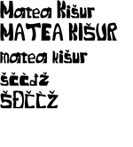
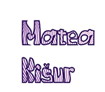
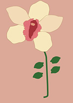
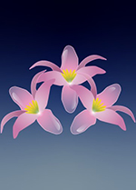
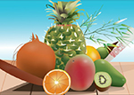
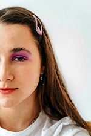
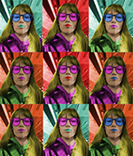
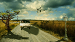
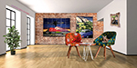

Redoslijed vježbi:
Prva vježba ovog kolegija bila je napraviti font. Font sam napravila u programu FontForge te sam alatom za crtanje "Pen" crtala krivulje i linije kako bih dobila oblike slova.
U drugoj vježbi sam koristila font koji sam kreirala u prvoj. Od programa sam koristila Adobe Illustrator te sam pomoću njega kreirala krivulje unutar teksta.
U trećoj vježbi sam crtala objekt s multipliciranim objektima sa Pen alatom u Illustratoru. Cvijet sam nacrtala pomoću predloška te sam tehnikom kopiranja tipkom Alt više puta kopirala latice cvijeta te sam koristila rotaciju, scale i transparenciju.
Zadatak u četvrtoj vježbi bio je kreirati objekt koji se sastojao od više staza služeći se metodama poput spajanja Unite/Compound path. Na cvijet sam primijenila različite gradijente od nekoliko boja kako bih ostvarila gladak prijelaz boja te transparenciju kako bi cvijet izgledao realističnije.
Zadatak je bio da se iskoriste tehnike koje su se naučile iz prethodnih vježba u Illustratoru. Dobila sam predložak voća te sam Pen alatom crtala voćke i služeći se različitim gradijentima i transparencijom pokušala ostvariti što realističniji prikaz. Također, bitnu ulogu u svemu je igrao i redoslijed Layera.
U petoj vježbi sam koristila alat Adobe Photoshop. Cilj je bio postići realističan prikaz. Selekcija na kojima je bilo nepravilnosti sam selektirala Lasso Tool-om, a iste nedostatke sam uklonila zamućivanjem pomoću filtera Dust and Scratches, kloniranjem pomoću Clone Stampa te kopiranjem selekcije u layere. Na fotografiji sam napravila i korekciju boja služeći se Burn i Dodge brushom, Levelsima i Brightness/Contrastom.
U šestoj sam vježbi transformirala crno-bijelu fotografiju u fotografiju s bojom. Selekcije sam radila pomoću Magnetic Lasso Toola i popravljala u Quick Mask Modeu. Boju sam dodavala pomoću Adjustment Layera, Hue/Saturation. Za kraj sam spojila fotografije u kolaž.
U sedmoj vježbi sam napravila fotomontažu u Photoshopu selektiranjem različitih elemenata s drukčijih fotografija. Cilj je bio da fotografija izgleda realistično. Za selekcije sam koristila alate poput Polygonal Lasso, Magnetic Lasso Tool te Quick Mask Mode, a stablo sam selektirala uz pomoć kanala jer ono ima puno detalja. Napravila sam korekciju boja pomoću Color Balanca i Levelsa te sam dodala sjene za realističniji izgled.
U drugom zadatku sam radila fotomontažu. Uklonila sam nedostatke te uklopila elemente sa različitih fotografija u jednu sa ciljem da izgleda što realističnije. Najviše su u tome pomogle sjene koje sam uredila tako što sam ih pretvorila u novi layer. Okvir na zidu uredila sam pomoću Vanishing Pointa. Kolorirala sam različite objekte koji su također bili maske, a jedan od njih je mačka na fotelji, koju sam kolorirala tehnikom New Adjustment Layera/Hue/Saturation i Color Balanca.
U osmoj vježbi sam koristila program Adobe Premiere Pro te sam pomoću njega kreirala Kinemagraf. Kinemagraf je videoisječak čija se sekvenca ponavlja u beskonačnost, najčešće u GIF formatu, a u kompoziciji spaja pokretnu i statičnu grafiku (sliku i video). Dok je većina grafike statična, samo mali dio je animiran (pokretan) U mome slučaju pokretno je nebo dok je ostatak video statičan. To sam napravila tako što sam u Photoshopu kreirala masku neba kako bi se taj određeni dio pomicao.